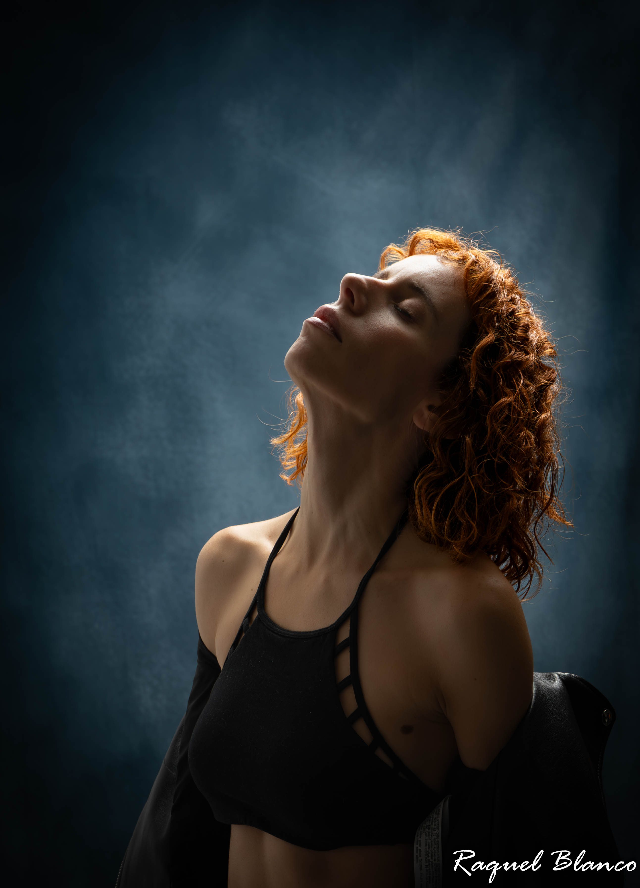

El Umbral es un espacio para quienes sienten que están entre vidas. Un lugar donde lo viejo ya no sostiene, pero lo nuevo aún no tiene forma.
Es un rito suave, íntimo, donde la fotografía se convierte en un puente. Un tránsito. Una apertura.
Aquí no vienes a posar. Vienes a aparecer.